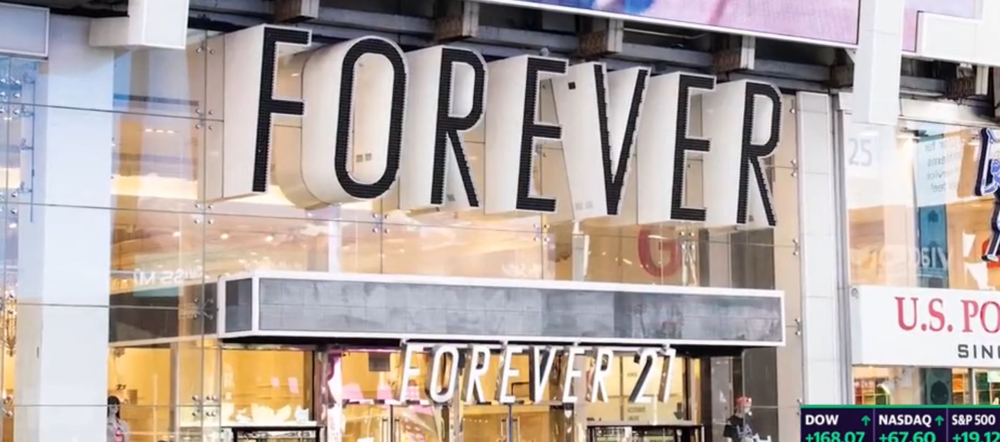
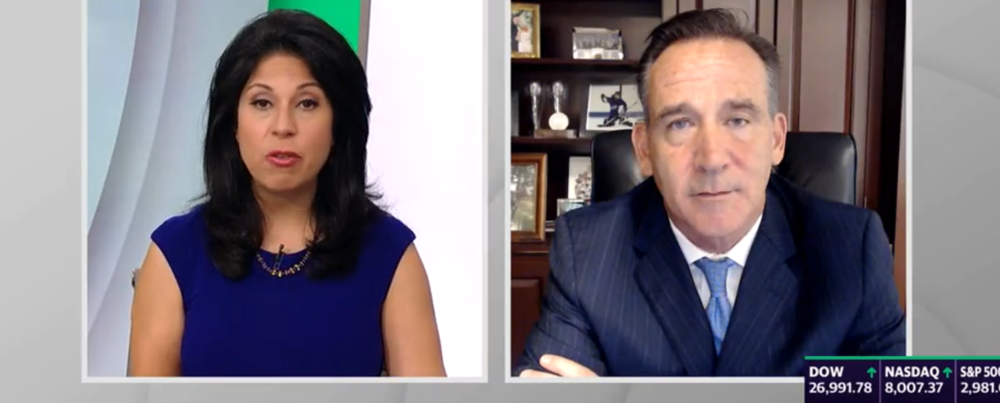

소매업의 종말 - 이발소에서 들은 이야기
게시: 2019-10-10T06:30:34+09:00
저는 서민답게 이발을 동네 나이스가이에서 8천원 내고 합니다. 추석 직전, 휴가일 때 한가한 나이스가이에서 이발을 했는데, 이용사 아저씨 아주머니께서 잡담을 하시더군요. 아주머니 "아는 백화점 사람이 그러는데 이번 추석이 역대 최악이래. 손님이 아예 없대." 아저씨 "그걸 누구 탓을 해야 하나 ?" 아주머니 "뭐 문재인 탓을 해야지." 아저씨 "(웃으며) 그게 그 사람 탓인가 ? 요즘 누가 백화점에서 사나? 다 온라인에서 사지 않아 ?" 아주머니 "(웃으며) 그래도 탓할 사람이 문재인 밖에 없쟎아." 저는 이 대화가 실제 민심을 대변한다고 생각합니다. 이유가 무엇이건 간에, 살림살이가 팍팍하면 503이건 MB건 금괴왕이건 국민들은 대통령 탓을 합니다. 그렇기 때문에 대통령이라는 자리는 어려운 자리이고, 무조건 경기가 좋아야만 합니다. 사실 수출 주도 경제를 가진 조그만 나라인 우리나라의 대통령이 경제를 살리기 위해서 할 수 있는 일은 별로 많지 않습니다. 다행히 현정부도 사태 심각성을 알고 재정 확장을 택한 것 같고, 해외 경제기관에서도 한국의 재정 확장 노력에 대해서는 상당히 호평을 하고 있습니다. (아래 링크 참조) "South Korea’s fiscal boost is a model for others" https://www.ft.com/content/3c15c81e-d615-11e9-8367-807ebd53ab77 "Two Emerging Markets Are Ready for the Next Global Recession" https://finance.yahoo.com/news/two-emerging-markets-ready-next-064446636.html?soc_src=community&soc_trk=fb 그와는 별개로, 백화점은 한국 뿐만 아니라 요즘 경기가 최고로 좋다는 미국에서도 최악의 시절을 보내고 있는데, 앞으로의 전망은 더 안 좋다고 합니다. 최근 각종 미국 뉴스 매체에 retail apocalypse, 즉 소매업의 종말이라는 표현이 자주 나왔습니다. 이 과격한 표현이 전혀 이상하게 들리지 않을 정도로 최근 몇 년간 미국내 백화점 및 대형 할인점 등의 소매업의 폐업이 줄을 잇고 있습니다. 그 이유는 아마존으로 대표되는 온라인 소매업의 침공에 덧붙여 기존 소매업이 지나치게 많은 대출에 의존하고 있었다는 것이라고 합니다. 그러나 많은 이들이 예상하는 것처럼 내년 즈음에 정말 경기 침체가 온다면 상황은 더욱 나빠질 거라고 합니다. 9월 말일자 CNN 뉴스에 최신 경향이 나와 있길래 번역했습니다. https://edition.cnn.com/2019/09/30/economy/forever-21-retail-apocalypse/index.html 최근 몇 년간 벌어진 '소매업의 종말'(retail apocalypse) 현상은 미국내 백화점과 체인점, 가족 단위의 소규모 상점들을 황폐화시켰다. 상점들이 기록적인 수준으로 폐업하고 있다. 소매업에 종사하는 사람들의 숫자도 줄어들고 있다. 그리고 이 모든 것이 정작 경기가 좋은 상태에서 벌어지고 있다. 하지만 많은 경제학자들이 내년 중 언젠가 올 거라고 우려하는 미국의 경기 침체가 정말 온다면, 소매업을 초토화시키고 있는 문제들은 훨씬 더 나빠질 것이다. 상점 폐쇄는 더 가속화될 것이고 이 업종의 해고도 더 확산될 것이데, 미국내 일자리의 상당수가 이 업종에서 나온다. "오프라인 소매업(brick-and-mortar retailers)은 이미 경기 침체에 들어섰습니다." 신용평가사 무디스(Moody's)의 수석 경제 분석가 마크 잔디(Mark Zandi)는 말했습니다. "지난 3년간 소매업에서는 직원들이 계속 해고되어 왔습니다. 소비자들이 아주 적극적으로 돈을 써대는 상황에서도 그랬습니다. 광역 경제가 침체에 빠져든다면 거리에는 유혈이 낭자할 겁니다." 지난 일요일(9월 29일), 포에버21(Forever 21)이 파산을 신청한 대형 소매 체인점 목록 최신판에 이름을 올리게 되었다. 포에버21은 미국내의 점포를 최대 178개 정도 폐쇄할 계획을 발표했는데, 이는 전체 점포 수의 약 1/3 정도이다. 이달 초에 창립 72년이 된 할인 체인점인 프레즈(Fred's)도 남은 300개 점포를 폐쇄할 것이라고 발표했었다.

미국내 소매점들은 올해 들어서 8,200개 점포 폐쇄를 발표했는데 코어사이츠 리서치(Coresights Research)에 따르면 이는 2017년의 6,700개를 가뿐히 넘어가는 숫자이다. 올해 말까지의 기록은 12,000개에 도달할 수도 있다고 코어사이츠는 추산하고 있다. 페일리스(Payless)와 짐보리(Gymboree)도 모두 올해 들어 두번째로 파산 신청을 하며 그 두 업체만도 거의 3,000개 점포를 폐쇄했다. 소비자들이 전통적인 점포에서 온라인으로 구매처를 옮기고 있는 것이 문제의 큰 부분을 차지하고 있다. 사실 소비자 구매 실적은 여전히 강한 편이고 실업률은 4% 아래로서 근 50년간에 걸쳐 최저치를 기록하고 있다. 하지만 곧 경기가 꺾일 거라는 우려가 감돌고 있다. 다른 나라의 경제들은 이미 침체에 빠졌거나 곧 빠질 예정이다. 미국과 중국 간의 무역 전쟁이 소비자 제품의 물가를 상승시킬 수 있다. 듀크(Duke) 대학의 설문 조사에 따르면 CFO(chief financial officer)들의 2/3 정도가 2020년 말까지는 경기 침체가 도래하리라고 예상하고 있다. 그러는 동안에, 많은 소매업체들은 대출이 많은 편이었다. "경기가 나빠진다면 그동안 대출에 자금줄을 의존하던 소매업체들의 붕괴가 가속화될 겁니다. 점포 폐쇄도 가속화될 것이고요." 에이티 커니(AT Kearney) 컨설팅의 세계 소비자 및 소매 현황 분야의 수석 파트너인 그렉 포텔(Greg Portell)은 그렇게 전망한다. 여태까지 파산한 많은 소매업체들은 소비자들의 욕구를 충족시키는 것을 별로 잘 하지 못했다고 포텔은 지적했다. 경기 침체는 더 잘 관리되고 실적이 좋은 소매업체들조차 힘겹게 만들 것이다. "그들의 미래는 자금을 어떻게 마련할 것이냐에 달려있습니다." 포텔은 말했다.
실업률이 올라가면 소비자들은 구매를 줄일 것이며, 소매업체에게나 소비자에게나 신용대출도 더 어려워질 것이라고 무디스의 잔디는 말한다. "많은 소매업체는 전체적인 경제 환경이 호황인데다 대출 이자가 낮고 신용대출이 가능하기 때문에 간신히 연명하고 있습니다. 신용대출에 대한 의존성은 다른 어떤 분야보다 소매업이 가장 심합니다. 경기 침체가 닥친다면 소비자에게나 소매업체에게나 신용대출이 어려워질 겁니다. 그러면 파산이 줄을 이을 것이고 많은 일자리가 사라지는 거지요." 그리고 미국 경제에 있어 소매업은 1580만개, 즉 전국 모든 일자리의 10% 이상에 해당하는 가장 큰 일자리 업종 중 하나입니다. 일자리 창출에 있어서 이보다 더 큰 기여를 하는 업종은 헬스케어 분야와 연방, 주, 시군구 단위의 전체를 합친 공공 분야 뿐입니다. "소매업은 모든 지역에 걸쳐 많은 일자리를 제공하고 있습니다." 잔디는 말했다. "만약 소비자들이 지갑을 닫고 점포 폐쇄가 늘어난다면 다른 어떤 분야도 그 부진을 보완해줄 수 없습니다." 소매업종은 2017년 초부터 거의 20만개의 일자리를 잃었는데 대부분의 일자리 상실은 전통적인 백화점과 의류 상점이었다. 만약 폐쇄된 점포 자리에 새로운 업체가 들어가지 않았다면 이 분야에서의 일자리 상실은 더 심각했을 것이다. 경기 침체가 되면 그런 새로운 점포 개설도 적어질 것이고, 오히려 기존 점포의 폐쇄는 더 늘어날 것이다. 여태까지는 실업률이 낮았고, 이는 점포 폐쇄로 일자리를 잃었던 소매업 근로자들이 어디선가 다른 일자리를 구할 수 있었다는 뜻이다. 만약 실업률이 증가한다면 - 경기 침체 때는 당연히 그러기 마련인데 - 실직한 소매업 근로자들이 일자리를 찾는 것이 더 힘들어질 것이다. "소매업 일자리는 대개 급여가 적습니다. 하지만 경제 구조 안에서 무척 취약한 그룹에게는 매우 중요한 일자리지요." 잔디는 말했다. 그 때문에라도, 이유가 무엇이든 소매업에서의 실직은 경기 침체를 더 악화시킨다고 그는 말했다.

(아래 링크의 비디오 클립 중 일부입니다만, 모건 스탠리의 경제 전문가와 대담 중인 여성 앵커의 모습이 인상적이었습니다. 전문성이 중요할 뿐 나이나 외모가 중요하지 않은 것은 남녀가 마찬가지여야 합니다.)
미국 소매업의 종말에 대한 다른 기사들도 참조하시기 바랍니다. https://finance.yahoo.com/video/morgan-stanley-sees-early-signs-154650026.html https://www.businessinsider.com/labor-statistics-the-retail-apocalypse-jobs-lost-2019-8 http://www.renegadetribune.com/retail-apocalypse-worsens-2019-is-going-to-be-a-very-bad-year-for-retail/